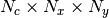

msdnet.utils module¶
Module with miscellaneous utility functions.
-
msdnet.utils.augment_and_average_prediction(n, inp)[source]¶ Augment input by rotating and flipping, and average network output to improve results.
- Parameters
n – MS-D network
network.Network.inp – input array (size: ).
- Returns
averaged output array.
-
msdnet.utils.load_simple_data(input_files, target_files, augment=False, labels=None, maskunlabeled=True)[source]¶ Load DataPoints in a simple format: a set of input file names and matching target file names (both specified by wildcards). The input file names and target file names should ‘sort’ the same.
- Parameters
input_files – string with path specification of input files (e.g. “input/*.tiff”)
target_files – string with path specification of input files (e.g. “target/*.tiff”)
augment – (optional) whether to augment images by rotating and flipping.
labels – (optional) list of numerical labels in label image. If specified, returned DataPoints are converted to one-hot encoded DataPoints for segmentation.
maskunlabeled – (optional) whether to mask out unlabeled pixels if labels is specified
- Returns
list of
data.DataPointobjects.